gf_plottype(formula, data = mydata)Formula Interface for ggplot2 (full version)
2020-07-01
Source:vignettes/pkgdown/ggformula-long.qmd
Formula-driven graphics
There are several excellent graphics packages provided for R. The ggformula package currently builds on one of them, ggplot2, but provides a very different user interface for creating plots. The interface is based on formulas (much like the lattice interface) and the use of the chaining operator (|>) to build more complex graphics from simpler components.
The ggformula graphics were designed with several user groups in mind:
beginners who want to get started quickly and may find the syntax of
ggplot2()a bit offputting,those familiar with
latticegraphics, but wanting to be able to easily create multilayered plots,those who prefer a formula interface, perhaps because it is familiar from use with functions like
lm()or from use of themosaicpackage for numerical summaries.
The basic formula template
The basic template for creating a plot with ggformula is
or, equivalently,
mydata |> gf_plottype(formula)where
plottypedescribes the type of plot (layer) desired (points, lines, a histogram, etc., etc.),mydatais a data frame containing the variables used in the plot, andformuladescribes how/where those variables are used.
For example, in a bivariate plot, formula will take the form y ~ x, where y is the name of a variable to be plotted on the y-axis and x is the name of a variable to be plotted on the x-axis. (It is also possible to use expressions that can be evaluated using variables in the data frame as well.)
The first form of the tempate is useful for simple plots or for multi-layered plots where different layers use different data. The second form is useful for multi-layered plots or plots with many arguments.
Here is a simple example:


Selecting the glyph type
The “kind of graphic” is specified by the name of the graphics function. All of the ggformula data graphics functions have names starting with gf_, which is intended to remind the user that they are formula-based interfaces to ggplot2: g for ggplot2 and f for “formula.” Commonly used functions include
-
gf_point()for scatter plots -
gf_line()for line plots (connecting dots in a scatter plot) -
gf_density()orgf_dens()orgf_histogram()orgf_dhistogram()orgf_freqpoly()to display distributions of a quantitative variable -
gf_boxplot()orgf_violin()for comparing distributions side-by-side -
gf_counts()for bar-graph style depictions of counts. -
gf_bar()for more general bar-graph style graphics
The function names generally match a corresponding function name from ggplot2, although
-
gf_counts()is a simplified special case ofgeom_bar(), -
gf_dens()is an alternative togf_density()that displays the density plot slightly differently -
gf_dhistogram()produces a density histogram rather than a count histogram.
Each of the gf_ functions can create the coordinate axes and fill it in one operation. (In ggplot2 nomenclature, gf_ functions create a frame and add a layer, all in one operation.) This is what happens for the first gf_ function in a chain. For subsequent gf_ functions, new layers are added, each one “on top of” the previous layers.
Attributes
Each of the marks in the plot is a glyph. Every glyph has graphical attributes (called aesthetics in ggplot2) that tell where and how to draw the glyph. In the above plot, the obvious attributes are x- and y-position:
We’ve told R to put mpg along the y-axis and hp along the x-asis, as is clear from the plot.
But each point also has other attributes, including color, shape, size, stroke, fill, and alpha (transparency). We didn’t specify those in our example, so gf_point() uses some default values for those – in this case smallish black filled-in circles.
Specifying attributes
In the gf_ functions, you specify the non-position graphical attributes using additional arguments to the function. Attributes can be set to a constant value (e.g, set the color to “blue”; set the size to 2) or they can be mapped to a variable in the data or some expression involving the variables (e.g., map the color to sex, so sex determines the color groupings)
Attributes are set or mapped using additional arguments.
- adding an argument of the form
attribute = valuesetsattributetovalue. - adding an argument of the form
attribute = ~ expressionmapsattributetoexpression
where attribute is one of color, shape, etc., value is a constant (e.g. "red" or 0.5, as appropriate), and expression may be some more general expression that can be computed using the variables in data (although often is is better to create a new variable in the data and to use that variable instead of an on-the-fly calculation within the plot).
The following plot, for instance,
We use
cylto determine the color andcarbto determine the size of each dot. Color and size are mapped tocylandcarb. A legend is provided to show us how the mapping is being done. (Later, we can use scales to control precisely how the mapping is done – which colors and sizes are used to represent which values ofcylandcarb.)We also set the transparency to 50%. The gives the same value of
alphato all glyphs in this layer.
gf_point(mpg ~ hp, color = ~ cyl, size = ~ carb, alpha = 0.50, data = mtcars) 
On-the-fly calculations
ggformula allows for on-the-fly calculations of attributes, although the default labeling of the plot is often better if we create a new variable in our data frame. In the examples below, since there are only three values for carb, it is easier to read the graph if we tell R to treat cyl as a categorical variable by converting to a factor (or to a string). Except for the labeling of the legend, these two plots are the same. In the second example, we see how the ggformula works well with data tranformations using |>.


“One-variable” plots
For some plots, we only have to specify the x-position because the y-position is calculated from the x-values. Histograms, densityplots, and frequency polygons are examples. To illustrate, we’ll use density plots, but the same ideas apply to gf_histogram(), and gf_freqpolygon() as well. Note that in the one-variable density graphics, the variable whose density is to be calculated goes to the right of the tilde, in the position reserved for the x-axis variable.
data(penguins, package = "palmerpenguins")
gf_density( ~ bill_length_mm, data = penguins)
gf_density( ~ bill_length_mm, fill = ~ species, alpha = 0.5, data = penguins)
# gf_dens() is similar, but there is no line at bottom/sides and the plot is not fillable
gf_dens( ~ bill_length_mm, color = ~ species, alpha = 0.7, data = penguins)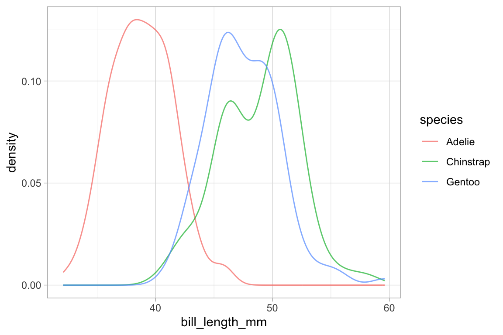
# gf_dens2() is like gf_dens() but is fillable
gf_dens2( ~ bill_length_mm, fill = ~ species, data = penguins,
color = "gray50", alpha = 0.4) 
Several of the plotting functions include additional arguments that do not modify attributes of individual glyphs but control some other aspect of the plot. In this case, adjust can be used to increase or decrease the amount of smoothing.
# less smoothing
penguins |> gf_dens( ~ bill_length_mm, color = ~ species, alpha = 0.7, adjust = 0.25)
#> Warning: Removed 2 rows containing non-finite outside the scale range
#> (`stat_density()`).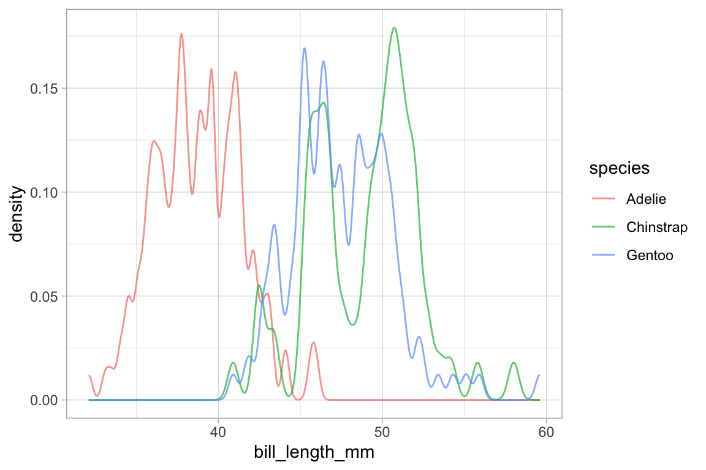
# more smoothing
penguins |> gf_dens( ~ bill_length_mm, color = ~ species, alpha = 0.7, adjust = 4)
#> Warning: Removed 2 rows containing non-finite outside the scale range
#> (`stat_density()`).
Position
When the fill or color or group aesthetics are mapped to a variable, the default behavior is to lay the group-wise densities on top of one another. Other behavior is also available by using the position argument. Using the value "stack" causes the densities to be laid one on top of another. This makes the overall height of the stack represent the density across all groups, but it can be difficult to discern the shape of the distribution for the individual groups. The value "fill" produces a conditional probability graphic.
penguins |>
gf_density( ~ bill_length_mm, fill = ~ species, color = NA, position = "stack")
penguins |>
gf_density( ~ bill_length_mm, fill = ~ species, color = NA, position = "fill",
adjust = 2)
Similar commands can be constructed with gf_histogram() and gf_freqpoly(), but note that color, not fill, is the active attribute for frequency polygons. It’s also rarely good to overlay histograms on top of one another – better to use a density plot or a frequency polygon for that application.
Faceting
The ggplot2 system allows you to make subplots — called “facets” — based on the values of one or two categorical variables. This is done by chaining with gf_facet_grid() or gf_facet_wrap(). These functions use formulas to specify which variable(s) are to be used for faceting.
penguins |>
gf_density_2d(bill_length_mm ~ bill_depth_mm) |>
gf_facet_grid( ~ species)
# the dot here is a bit strange, but required to make a valid formula
penguins |>
gf_density_2d(bill_length_mm ~ bill_depth_mm) |>
gf_facet_grid( species ~ .)
penguins |>
gf_density_2d(bill_length_mm ~ bill_depth_mm) |>
gf_facet_grid(island ~ species)
penguins |>
gf_density_2d_filled(bill_length_mm ~ bill_depth_mm,
show.legend = FALSE) |>
gf_facet_wrap(island ~ species)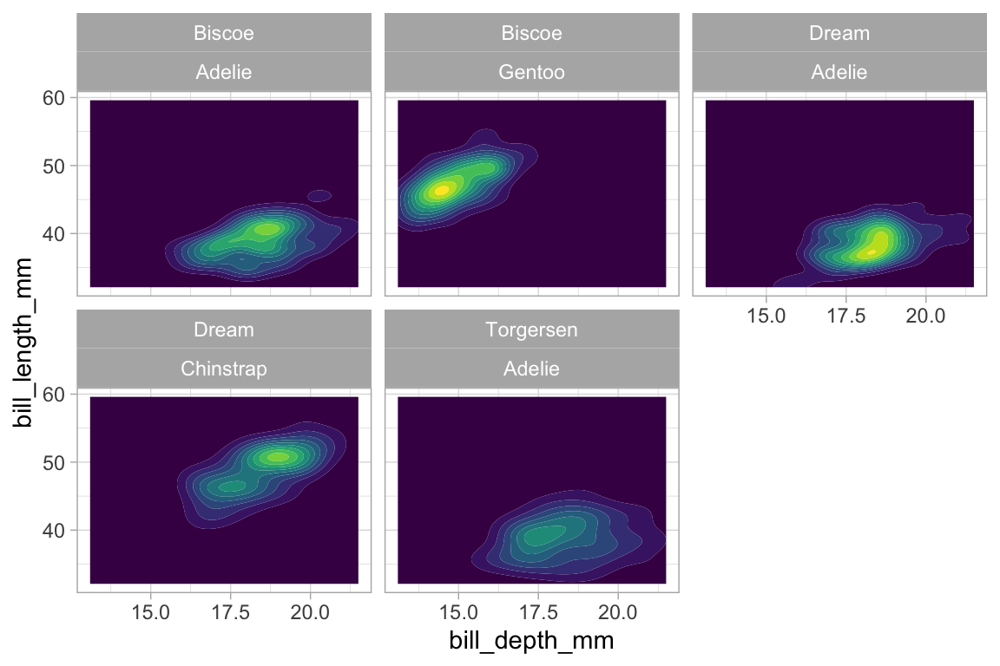
An alternative syntax uses | to separate the faceting information from the main part of the formula.
Here is another example using our weather data. The redundant use of the y and color attributes for temperature makes it easier to compare across facets.
Weather |>
gf_ribbon(low_temp + high_temp ~ date | city ~ year, alpha = 0.3) 
Weather |>
gf_linerange(low_temp + high_temp ~ date | city ~ year, color = ~ avg_temp) |>
gf_refine(scale_colour_gradientn(colors = rev(rainbow(5))))
In this case, we should either not facet by year, or allows the x-scale to be freely adjusted in each column so that we don’t have so much unnecessary white space. We can do the latter using the scales argument to gf_facet_grid().
Weather |>
gf_ribbon(low_temp + high_temp ~ date | city ~ ., alpha = 0.3) 
Weather |>
gf_linerange(low_temp + high_temp ~ date, color = ~ avg_temp) |>
gf_refine(scale_colour_gradientn(colors = rev(rainbow(5)))) |>
gf_facet_grid(city ~ year, scales = "free_x")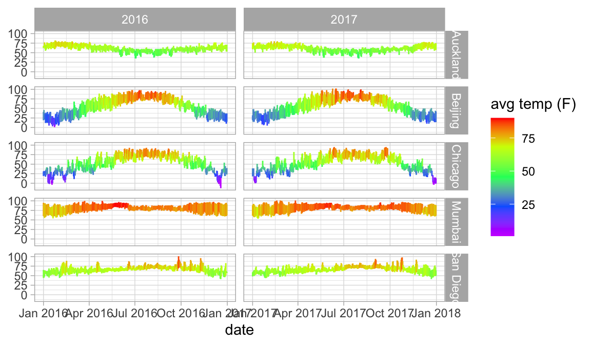
Labels in plots
Usually plot labels reflect the expression mapped to a given attribute. But in the previous example, our colorbar legend is labeled “avg temp (F)” even though the variable name is avg_temp. This is because the Weather data set is labeled.
get_variable_labels(Weather)
#> $city
#> NULL
#>
#> $date
#> NULL
#>
#> $year
#> NULL
#>
#> $month
#> NULL
#>
#> $day
#> NULL
#>
#> $high_temp
#> [1] "high temp (F)"
#>
#> $avg_temp
#> [1] "avg temp (F)"
#>
#> $low_temp
#> [1] "low temp (F)"
#>
#> $high_dewpt
#> [1] "high dew point (F)"
#>
#> $avg_dewpt
#> [1] "avg dew point (F)"
#>
#> $low_dewpt
#> [1] "low dew point (F)"
#>
#> $high_humidity
#> [1] "high relative humidity"
#>
#> $avg_humidity
#> [1] "avg relative humidity"
#>
#> $low_humidity
#> [1] "low relative humidity"
#>
#> $high_hg
#> [1] "high pressure (mm Hg)"
#>
#> $avg_hg
#> [1] "avg pressure (mm Hg)"
#>
#> $low_hg
#> [1] "low pressure (mm Hg)"
#>
#> $high_vis
#> [1] "high visibility (miles)"
#>
#> $avg_vis
#> [1] "avg visibility (miles)"
#>
#> $low_vis
#> [1] "low visibility (miles)"
#>
#> $high_wind
#> [1] "high wind speed (mph)"
#>
#> $avg_wind
#> [1] "avg wind speed (mph)"
#>
#> $low_wind
#> [1] "low wind speed (mph)"
#>
#> $precip
#> [1] "precipitation"
#>
#> $events
#> [1] "events"ggformula will detect these labels and use them on our plots. We can use set_variable_labels() to add custom labels to some or all of the variables in a data frame.1
KF <- KidsFeet |>
set_variable_labels(
length = "length (cm)",
width = "width (cm)",
domhand = "dominant hand",
biggerfoot = "bigger foot"
)
KidsFeet |>
gf_point(width ~ length, color = ~domhand)
KF |>
gf_point(width ~ length, color = ~domhand)
Penguins <- penguins |>
set_variable_labels(
species = "Species",
island = "Island",
bill_length_mm = "Bill Length (mm)",
bill_depth_mm = "Bill Depth (mm)",
flipper_length_mm = "Flipper Length (mm)",
body_mass_g = "Body Mass (g)",
sex = "Sex"
)
Penguins |>
gf_point(bill_length_mm ~ bill_depth_mm, color = ~ species)
#> Warning: Removed 2 rows containing missing values or values outside the scale range
#> (`geom_point()`).
By adding labels to the data, we can ensure consitent labeling across several plots. But it is also possible to modify labels just for one plot. This can be done in three ways:
- We can use arguments like
xlab,ylab, andtitle; - We can use the
gf_labs()function (which has arguments likex,y,title, etc.); - We can use the
gf_relabel()function.
KidsFeet |>
gf_point(width ~ length, color = ~domhand, xlab = "length (cm)",
title = "Length and width of kids' feet")
p <- KidsFeet |> gf_point(width ~ length, color = ~domhand)
p |>
gf_labs(x = "length (cm)", color = "dominant hand", title = "Some kids' feet")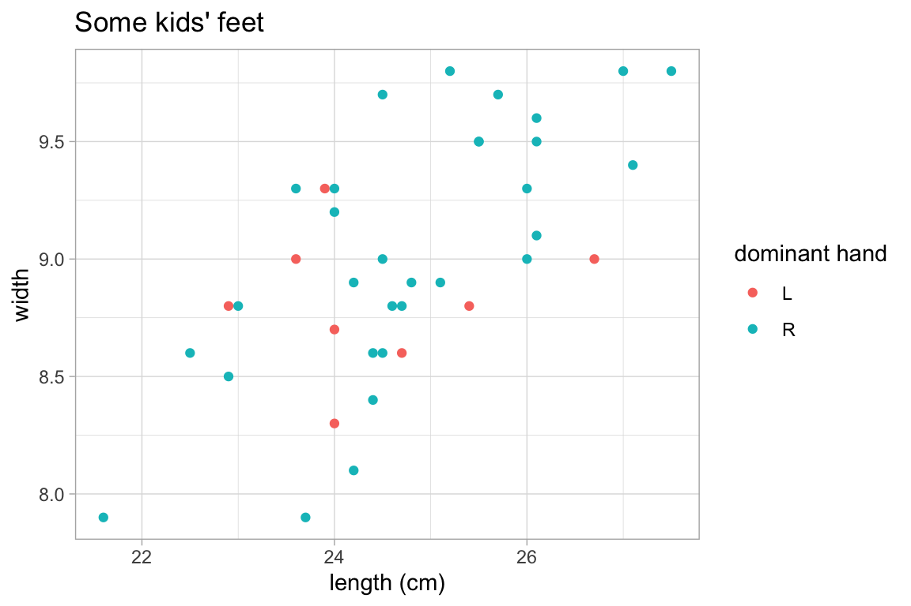
p |>
gf_relabel(length = "length (cm)", width = "width (cm)", domhand = "dominant hand")
# alternatively, we can use a list.
# this is handy if we have several data sets with the same variables.
KFlabels <-
list(length = "length (cm)", width = "width (cm)", domhand = "dominant hand")
p |>
gf_relabel(KFlabels)
Notice that gf_labs() and gf_relabel() take a different approaches to labeling. gf_labs() refers to labels by their role in the plot whereas gf_relabel() refers to variables in the data set and uses the new labels wherever the variable appears. Both are useful. gf_labs() provides access to additional labels (title, subtitle, caption, etc.), but it easier to mistakenly create a plot with a label that doesn’t match the true content of the plot. gf_relabel() only deals with labels associated with variables, but the label is guaranteed to match that variable no matter how the variable is used within the plot.
Chaining to create complex plots
Often it is useful to overlay multiple layers onto a single plot. This can be done by chaining them with |>, the “then” operator from magrittr. The data argument can be omitted if the new layers uses the same data as the first layer in the chain.
The following plot illustrates how histograms and frequency polygons are related.
Penguins |>
gf_histogram( ~ bill_length_mm, alpha = 0.3, fill = "navy", binwidth = 1) |>
gf_freqpoly( ~ bill_length_mm , binwidth = 1) |>
gf_facet_grid(species ~ .)
#> Warning: Removed 2 rows containing non-finite outside the scale range (`stat_bin()`).
#> Removed 2 rows containing non-finite outside the scale range (`stat_bin()`).A 2-d density plot can be augmented with a scatterplot.
Penguins |>
gf_density_2d(bill_length_mm ~ bill_depth_mm) |>
gf_jitter(bill_length_mm ~ bill_depth_mm, alpha = 0.2, width = 0.2, height = 0.2) |>
gf_facet_wrap(~species)
#> Warning: Removed 2 rows containing non-finite outside the scale range
#> (`stat_density2d()`).
#> Warning: Removed 2 rows containing missing values or values outside the scale range
#> (`geom_point()`).
More 2-variable plots
Using jitter and transparency to handle overlapping cases
Sometimes you have so many points in a scatter plot that they obscure one another. The ggplot2 system provides two easy ways to deal with this: translucency and jittering. Use alpha to make the points semi-translucent.
Using gf_jitter() in place of gf_point() will move the plotted points to reduce overlap. Jitter and transparency can be used together as well.
Penguins |>
gf_point(bill_length_mm ~ species, alpha = 0.15)
#> Warning: Removed 2 rows containing missing values or values outside the scale range
#> (`geom_point()`).
Penguins |>
gf_jitter(bill_length_mm ~ species, alpha = 0.35)
#> Warning: Removed 2 rows containing missing values or values outside the scale range
#> (`geom_point()`).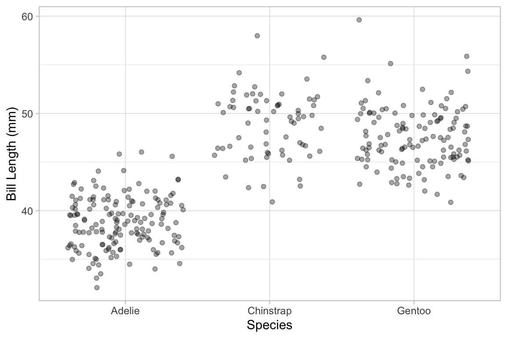
# width and heigh control the amount of horizontal and vertical jitter
Penguins |>
gf_jitter(bill_length_mm ~ species, alpha = 0.35, width = 0.2, height = 0)
#> Warning: Removed 2 rows containing missing values or values outside the scale range
#> (`geom_point()`).
Box and Whisker plots
Box and whisker plots show the distribution of a quantitative variable as a function of a categorical variable. The formula used in gf_boxplot() should have the quantitative variable to the left of the tilde. (To make horizontal boxplots using ggplot2 you have to make vertical boxplots and then flip the coordinates with coord_flip().)
gf_boxplot(length ~ sex, color = "red", data = KF)
gf_boxplot(length ~ sex, color = ~biggerfoot , data = KF)
This plot may surprise you.
Weather |>
gf_boxplot(high_temp ~ month | city)
#> Warning: Continuous x aesthetic
#> ℹ did you forget `aes(group = ...)`?
A single plot is placed at the at the mean value of month (for each city). The warning message suggests that we need to tell R how to form the groups when using a quantitative variable for x. It suggests using the group aesthetic, and sometimes, this is just what we want.
Weather |>
gf_boxplot(high_temp ~ month | city, group = ~ month)
Alternatively, we could create a new categorical variable that puts the quantitative values into one of a few different bins.
Alternatives to box and whisker plots.
gf_violin() and gf_sina() provide two alternatives to box and whisker plots.
Penguins |> gf_violin(bill_length_mm ~ species)
#> Warning: Removed 2 rows containing non-finite outside the scale range
#> (`stat_ydensity()`).
if (require(ggforce)) {
Penguins |> gf_sina(bill_length_mm ~ species, alpha = 0.5)
Penguins |>
gf_violin(bill_length_mm ~ species) |>
gf_sina(bill_length_mm ~ species, alpha = 0.5, color = ~ island)
}
#> Loading required package: ggforce
#> Warning: Removed 2 rows containing non-finite outside the scale range
#> (`stat_ydensity()`).
#> Warning: Removed 2 rows containing non-finite outside the scale range
#> (`stat_sina()`).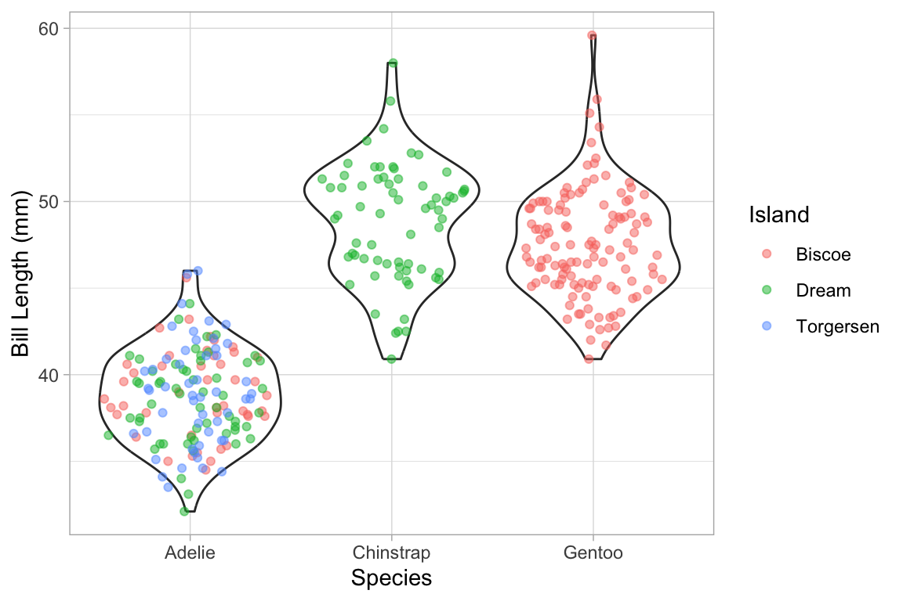
Ridge plots
Ridge plots can be useful to displaying multiple density plots compactly.
Weather |>
gf_density_ridges(month ~ high_temp | city, group = ~month)
#> Picking joint bandwidth of 1.09
#> Picking joint bandwidth of 2.45
#> Picking joint bandwidth of 3.79
#> Picking joint bandwidth of 1.16
#> Picking joint bandwidth of 1.7
Weather |>
gf_density_ridges_gradient(month ~ high_temp | city, group = ~ month,
show.legend = FALSE) |>
gf_refine(scale_fill_viridis_c(option = "B"))
#> Warning: `stat(x)` was deprecated in ggplot2 3.4.0.
#> ℹ Please use `after_stat(x)` instead.
#> Picking joint bandwidth of 1.09
#> Picking joint bandwidth of 2.45
#> Picking joint bandwidth of 3.79
#> Picking joint bandwidth of 1.16
#> Picking joint bandwidth of 1.72-dimensional density plots
Two-dimensional plots of density also have both a left and right component to the formula.
Penguins |> gf_density_2d(bill_length_mm ~ bill_depth_mm | species)
#> Warning: Removed 2 rows containing non-finite outside the scale range
#> (`stat_density2d()`).
Penguins |> gf_density_2d_filled(bill_length_mm ~ bill_depth_mm | species)
#> Warning: Removed 2 rows containing non-finite outside the scale range
#> (`stat_density2d_filled()`).
Penguins |> gf_hex(bill_length_mm ~ bill_depth_mm | species, binwidth = 1)
#> Warning: Removed 2 rows containing non-finite outside the scale range
#> (`stat_binhex()`).Paths and lines
The ggplot2 system offers two ways to connect points. gf_line() ignores the order of the points in the data, and draws the line going from left to right. gf_path() goes from point to point according to the order in the data. Both forms can use a color or group aesthetic to indicate which groups of points are connected.
Here’s an example where gf_line() is useful. We begin with a scatter plot showing the number of live births in the US for each day of 1978.
Births78 |> gf_point(births ~ date)Can this interesting pattern be explained by a weekday/weekend effect?
Converting to a line plot and coloring by day of week highlights the pattern and makes it easy to spot the unusual days.
Births78 |> gf_line(births ~ date, color = ~ wday)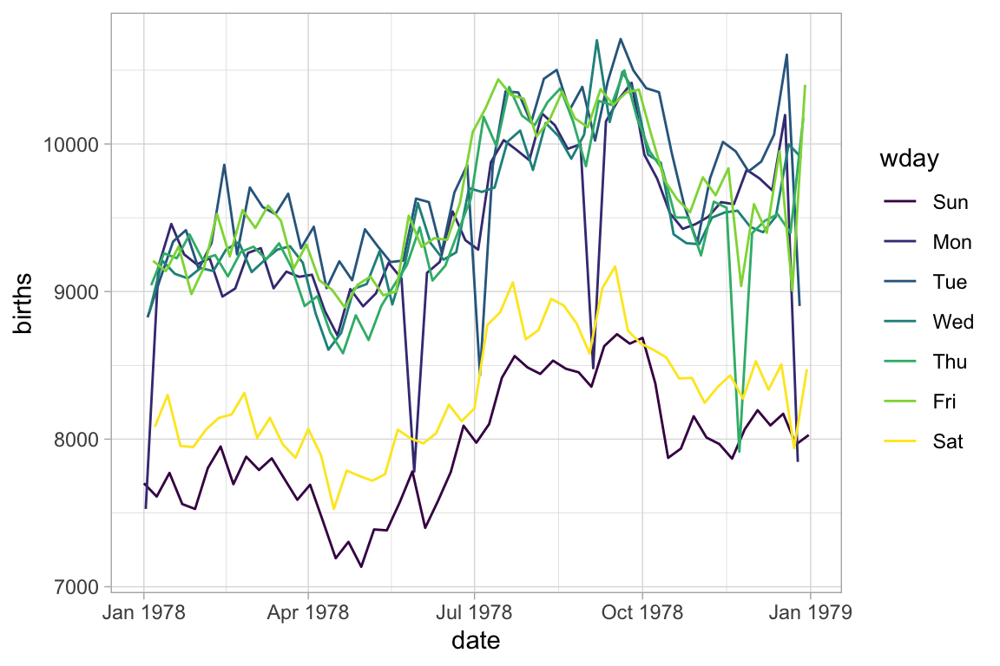
The example above would look the same if we used gf_path() because the data set is already sorted by date. But in general, gf_path() and gf_line() produce different results. In the plots below, the first connects days chronologically (because the data are sorted by date) and the second in order of their low temperature.
Weather |>
filter(month == 5, year == 2017, city == "Chicago") |>
gf_path(high_temp ~ low_temp | city ~ year, color = ~ day) |>
gf_refine(scale_color_viridis_c(option = "C", begin = 0.2, end = 0.8))
Weather |>
filter(month == 5, year == 2017, city == "Chicago") |>
gf_line(high_temp ~ low_temp | city ~ year, color = ~ day) |>
gf_refine(scale_color_viridis_c(option = "C", begin = 0.2, end = 0.8))Plots with more than 2 positional attributes
Some layers require more than two attributes. Typically this happens when the glyphs of a layer are complex objects that could have been made using multiple layers, but belong together conceptually. Examples include
-
gf_pointrange()– plots a dot flanked by a line segment.
-
gf_linrange()– likegf_pointrange()but without the point. -
gf_errorbar()– vertical error bars. -
gf_errorbarh()– horizontal error bars. -
gf_ribbon()– a band between a line above and line below.
Often these are used to depict some sort of estimate of uncertainty in a measurement or a prediction, but they can be used to represent any data of the correct form. Here we will use gf_linerange() and gf_ribbon() to indicate the high and low temperatures in New York for the first few months of 2013.
Temps <-
Weather |>
filter(month <= 4, year <= 2016, city == "Chicago")
Temps |>
gf_pointrange(avg_temp + low_temp + high_temp ~ date, color = ~ avg_temp) |>
gf_refine(scale_color_gradientn(colors = c("blue", "green", "orange", "red")))
Temps |>
gf_ribbon(low_temp + high_temp ~ date, color = "navy", alpha = 0.3)
Positions and Stats
Positions
position_dodge(), position_jitter(), and position_jitterdodge() can be used to adjust the positions at which glyphs are placed. Jittering adds some random noise and can be useful when many observations have the same value. Dodging moves groups of glyphs a fixed difference to make it easier to distinguish the groups.
KidsFeet |>
gf_point(length ~ sex, color = ~ domhand,
position = position_jitterdodge(jitter.width = 0.2, dodge.width = 0.4))
Stats
A stat is a transformation that is applied to the data before a plot is generated. Several of the plots we have seen have made use of stats.
-
gf_histogram()usesstat_bin()to bin the data and count the number of observations in each bin. It is equivalent to
HELPrct |> gf_bar( ~ age, stat = "bin")
#> `stat_bin()` using `bins = 30`. Pick better value `binwidth`.
gf_boxplot()usesstat_boxplot()to compute the five-number summary on which the boxplot is based.gf_violin(),gf_density(), andgf_density2d()use stats to compute a sequence of points along an estimated density. It is these points, and the not the raw data that are used to create the plot.gf_sina()uses the estimated density to jitter points.

There are also a number of stats that can be used to show a functional relationship between two variables.
gf_smooth()plots a model fit usinglm(),glm(),gam(),loess(),MASS::rlm().gf_lm()isgf_smooth()with the method set tolm()so it plots a least squares regression line.gf_spline()plots a spline fit to the data.

mosaicData::Births |>
gf_point(births ~ date, color = ~wday, alpha = 0.15) |>
gf_smooth(method = "loess")
Confidence or prediction bands can be added to these as well.
KidsFeet |>
gf_point(length ~ width | sex, color = ~ sex) |>
gf_lm(interval = "prediction", fill = "red") |>
gf_lm(interval = "confidence", fill = "navy")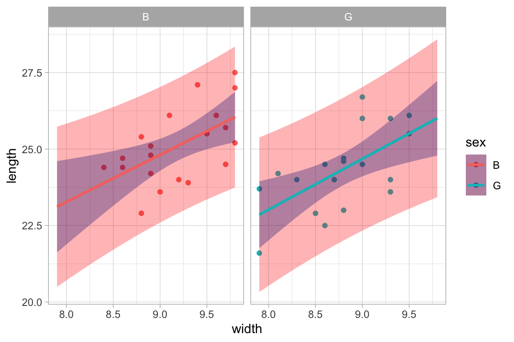
Mostly, the stats selected by default are just the ones you need. But sometimes it is useful to select a different stat. The stat_summary() and stat_summary_bin() stats are particularly useful in this respect. These stats use a function to aggregate over unique values of x or over bins of x values and save the user needing to do that data transformation manually.
The default function applied in each group is mean_se(), which computes the mean (and the mean plus and minus one standard error) This makes it simple to create an “interaction plot”.
KidsFeet |>
gf_jitter(length ~ sex, color = ~ domhand, width = 0.1, height = 0) |>
gf_line(length ~ sex, color = ~ domhand, group = ~ domhand, stat = "summary")
#> No summary function supplied, defaulting to `mean_se()`
Penguins |>
gf_jitter(body_mass_g ~ sex, color = ~ species, width = 0.1, height = 0) |>
gf_line(body_mass_g ~ sex, color = ~ species, group = ~ species, stat = "summary")
#> No summary function supplied, defaulting to `mean_se()`
#> Warning: Removed 2 rows containing non-finite outside the scale range
#> (`stat_summary()`).
#> Warning: Removed 2 rows containing missing values or values outside the scale range
#> (`geom_point()`).
The other two values computed by mean_se() are available (starting with ggplot2 version 2.3) as stat(ymin) and stat(ymax).
KidsFeet |>
gf_jitter(length ~ sex, color = ~ domhand, width = 0.1, height = 0, alpha = 0.5) |>
gf_pointrange(length + stat(ymin) + stat(ymax) ~ sex,
color = ~ domhand, group = ~ domhand, stat="summary")
#> No summary function supplied, defaulting to `mean_se()`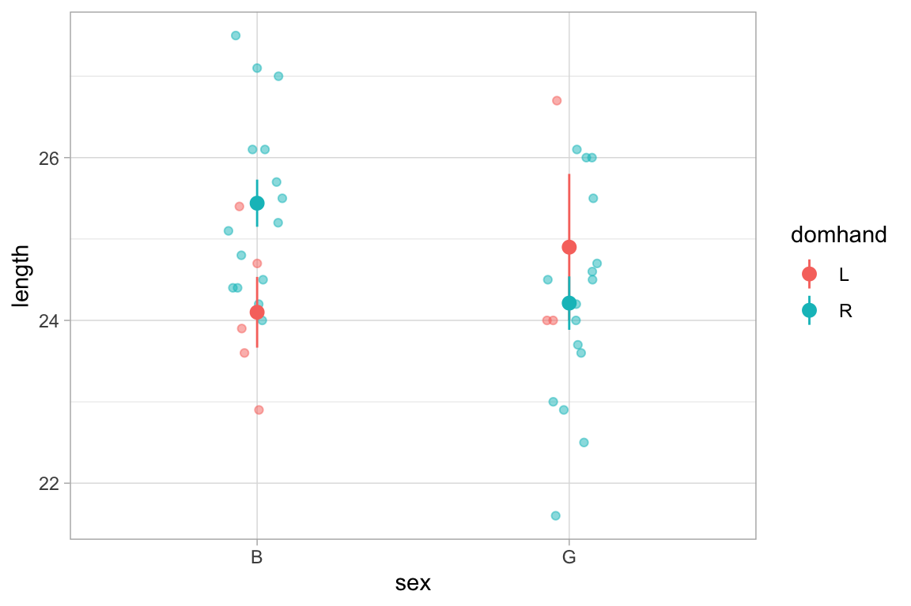
Penguins |>
gf_jitter(body_mass_g ~ sex, color = ~ species, width = 0.1, height = 0, alpha = 0.3) |>
gf_pointrange(body_mass_g + stat(ymin) + stat(ymax) ~ sex, color = ~ species,
group = ~ species, size = 1.5, stat="summary")
#> No summary function supplied, defaulting to `mean_se()`
#> Warning: Removed 2 rows containing non-finite outside the scale range
#> (`stat_summary()`).
#> Warning: Removed 2 rows containing missing values or values outside the scale range
#> (`geom_point()`).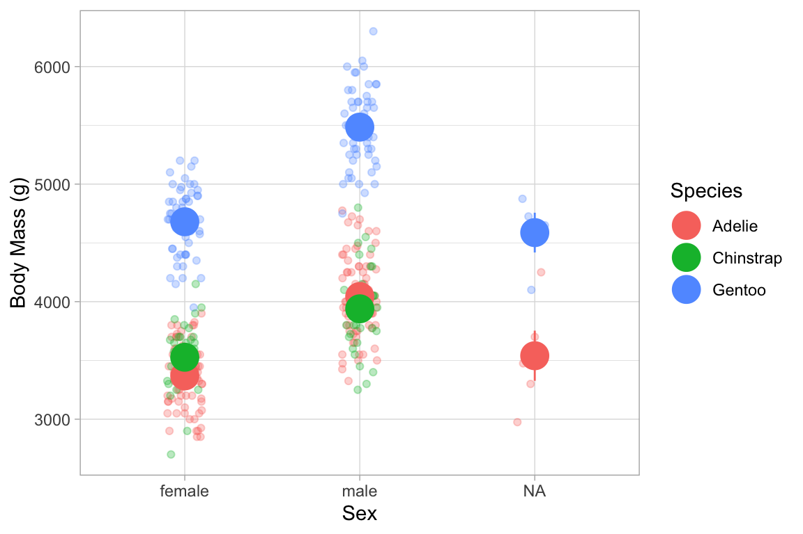
Custom functions can be used by defining fun.y, fun.ymin, and fun.ymax, or a single function fun.data that returns a data frame with variables named y, ymin, and ymax.
KidsFeet |>
gf_point(length ~ sex, color = ~ domhand, width = 0.1, height = 0, alpha = 0.5,
position = position_jitterdodge(jitter.width = 0.2, dodge.width = 0.3)) |>
gf_pointrange(length + stat(ymin) + stat(ymax) ~ sex,
color = ~ domhand, group = ~ domhand, stat="summary",
fun.y = median, fun.ymin = min, fun.ymax = max,
position = position_dodge(width = 0.6), size = 1.2)
#> No summary function supplied, defaulting to `mean_se()`
Plotting functions
ggformula provides two way to plot functions: gf_function() and gf_fun(). They differ primarily in how one specifies the function to be plotted.
-
gf_function()requires a (vectorized) function of one variable. -
gf_fun()requires a formula describing how the y-values are computed from the x-values.
If these are used as a first layer, the limits for the x-axis must be specified.

Maps
Prior to ggplot2 version 2.3, basic maps could be created using gf_polygon().
if (require(maps) && require(dplyr)) {
US <- map_data("state") |>
dplyr::mutate(name_length = nchar(region))
States <- US |>
dplyr::group_by(region) |>
dplyr::summarise(lat = mean(range(lat)), long = mean(range(long))) |>
dplyr::mutate(name = abbreviate(region, 3))
gf_polygon(lat ~ long, data = US, group = ~ group,
fill = ~ name_length, color = "white") |>
gf_text(lat ~ long, label = ~ name, data = States,
color = "gray70", inherit = FALSE) |>
gf_refine(mosaic::theme_map())
}
Starting with ggplot2 version 2.3, there is direct support for shape files. This allows each row of a data frame to contain all the geometry information for a region in a single column. There is also better support for overlaying information from multiple shape files.
if (require(maps) && require(dplyr) && require(sf) && require(purrr)) {
USshape <-
sf::st_as_sf(maps::map('state', plot = FALSE, fill = TRUE)) |>
dplyr::mutate(
name_length = nchar(as.character(ID)),
centroid = purrr::map(geom, st_centroid),
coords_x = purrr::map_dbl(centroid, 1),
coords_y = purrr::map_dbl(centroid, 2)
)
gf_sf(fill = ~ factor(name_length), color = "white", data = USshape, alpha = 0.5) |>
gf_text(coords_y ~ coords_x, label = ~ ID, color = "gray20", size = 2) |>
gf_labs(x = "", y = "") |>
gf_refine(coord_sf()) |>
gf_theme(mosaic::theme_map()) |>
gf_labs(fill = "name length")
}
<!-- # gf_sf(data = sf::st_centroid(USshape), color = "white", alpha = 0.5, size = 3) |> -->New types of plots
ggformula adds some additional plot options to ggplot2
ASH plots
Average shifted histograms can be created with gf_ash(). These plots average the height over all histograms with the same bin width. ASH plots often work well with larger bin widths than you might use for an individual histogram.
HELPrct |>
gf_ash( ~ age, data = HELPrct, binwidth = 2) |>
gf_dhistogram( ~ age, binwidth = 2, alpha = 0.3) 
HELPrct |>
gf_ash( ~ age, binwidth = 10) |>
gf_dhistogram( ~ age, binwidth = 2, alpha = 0.3) Distribution plots
gf_dist() can be used to create plots of discrete and continuous distributions.
gf_dist("pois", lambda = 5)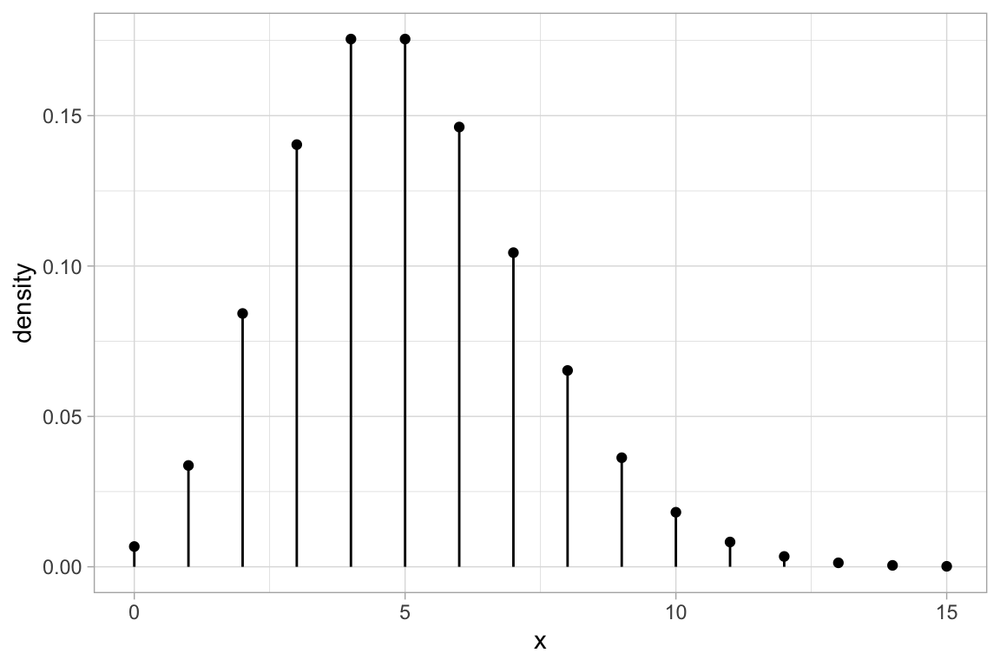
gf_dist("pois", lambda = 5, kind = "cdf")
gf_dist("gamma", shape = 3, rate = 4, geom = "area")
gf_dist("gamma", shape = 3, rate = 4, geom = "area", fill = ~ (x <= 1))
gf_dist("gamma", shape = 3, rate = 4, kind = "cdf")When distribution parameters and plot attributes have the same name, there are two ways to avoid the name collision:
# size is used by the binomial distribution functions and when plotting
gf_dist("binom", size = 20, prob = 0.25, plot_size = 5)

ggformula also provides an interface to MASS::fitdistr() for fitting distributions to data and displaying the resulting pdf.
x <- rgamma(1000, shape = 2, rate = 5)
gf_dhistogram( ~ x, alpha = 0.3) |>
gf_fitdistr(dist = "dnorm", color = ~ "Normal") |>
gf_fitdistr(dist = "dgamma", color = ~ "Gamma") |>
gf_fitdistr(dist = "dweibull", color = ~ "Weibull") |>
gf_labs(color = "")
#> `stat_bin()` using `bins = 30`. Pick better value `binwidth`.
#> Warning in densfun(x, parm[1], parm[2], ...): NaNs produced
#> Warning in densfun(x, parm[1], parm[2], ...): NaNs produced
#> Warning in densfun(x, parm[1], parm[2], ...): NaNs produced
#> Warning in densfun(x, parm[1], parm[2], ...): NaNs produced
#> Warning in densfun(x, parm[1], parm[2], ...): NaNs produced
Global plot adjustments
There are a number of things we may want to do to the entire plot – adjusting labels, colors, fonts, etc. ggformula provides wrappers to the ggplot2 functions for this so that the chaining syntax can be used.
penguins |>
gf_histogram( ~ body_mass_g, alpha = 0.2, fill = "navy",
color = "gray50", binwidth = 200) |>
gf_freqpoly( ~ body_mass_g, binwidth = 200) |>
gf_facet_grid(species ~ .) |>
gf_labs(x = "bill length (mm)", title = "Palmer Penguins") |>
gf_lims(x = c(2500, 6500)) |>
gf_theme(theme = theme_minimal())
#> Warning: Removed 2 rows containing non-finite outside the scale range (`stat_bin()`).
#> Removed 2 rows containing non-finite outside the scale range (`stat_bin()`).
penguins |>
gf_histogram( ~ body_mass_g | species ~ ., alpha = 0.5, fill = "white",
binwidth = 200, color = "gray40") |>
gf_freqpoly( ~ body_mass_g, color = "skyblue",
binwidth = 200, size = 1.2, alpha = 0.8) |>
gf_labs(x = "bill length (mm)", title = "Palmer Penguins") |>
gf_lims(x = c(2500, 6500)) |>
gf_theme(theme = theme_dark())
#> Warning: Using `size` aesthetic for lines was deprecated in ggplot2 3.4.0.
#> ℹ Please use `linewidth` instead.
#> Removed 2 rows containing non-finite outside the scale range (`stat_bin()`).
#> Removed 2 rows containing non-finite outside the scale range (`stat_bin()`).
#> ℹ The deprecated feature was likely used in the base package.
#> Please report the issue to the authors.
For convenience, a few modifications can also be made directly in the original function call:
penguins |>
gf_dhistogram( ~ body_mass_g | species ~ .,
alpha = 0.5, fill = "skyblue", color = "navy", binwidth = 200,
xlab = "body mass (g)", title = "Palmer Penguins"
)
#> Warning: Removed 2 rows containing non-finite outside the scale range
#> (`stat_bin()`).
Horizontal Geoms
Some of the geoms in ggplot2 can have either a horizontal or vertical direction. Often ggplot2 will correctly determine which orientation is intended. If not, set orientation = 'x' or orientation = 'y' to explicitly set the direction of the geom.
gf_boxplot(high_temp ~ city, data = Weather)
# auto-detected because city is discrete
gf_boxplot(city ~ high_temp, data = Weather)
# auto-detected based on groups
gf_boxplot(month ~ high_temp | ~ city, group = ~ month, data = Weather)
gf_boxplot(high_temp ~ month | city ~ ., group = ~ month, data = Weather)
# defaults to veritcal without groups
gf_boxplot(month ~ high_temp | ~ city, data = Weather)
#> Warning: Continuous x aesthetic
#> ℹ did you forget `aes(group = ...)`?
# explicit horizontal orientation
gf_boxplot(month ~ high_temp | city ~ ., data = Weather, orientation = 'y')
#> Warning: Continuous y aesthetic
#> ℹ did you forget `aes(group = ...)`?